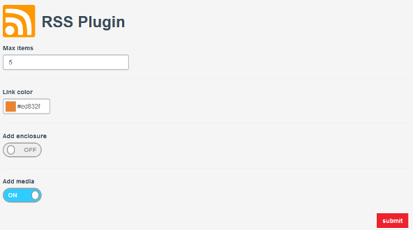
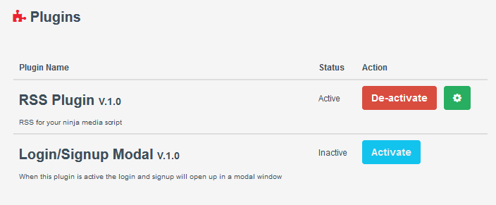
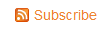

ABOUT
RSS Plugin for Ninja Media Script generates and allows your users to subscribe to your website's RSS feed. With the ability to change multiple parameters

This version of the plugin was developed with the Ninja Media Script 1.1.9
HOW TO INSTALL THE RSS PLUGIN
To install the RSS Plugin for Ninja Media Script follow these steps
- Upload the feed folder to your website. Make sure to move the folder to the /content/plugins/ folder
- Upload the app/controllers/FeedController.php to your website. Make sure to move the file to the /application/app/controllers/ folder
- Upload the app/views/feed to your website. Make sure to move the folder to the /application/app/views folder
- Add to the end of your /application/app/routes.php the following code : Route::get('/feed', 'FeedController@rss');
- Add to your /application/app/views/layouts/master.blade.php the following code : <?php call_user_func ( Config::get('site.rss')); ?> after <?php call_user_func ( Config::get('site.header')); ?>
-
Next, login to your site and go to your admin page. http://yoursite.com/admin and click on the Plugins menu item. you should be able to see the RSS Plugin

- Then, you can activate the plugin by clicking the activate button next to the RSS Plugin 
- Finaly, if everything is working correctly you should be able to see the feed here http://yoursite.com/feed see a link added near your social media links 